Contingency Planning
I packed up spares of all the electronic components in case one of the modules were to go kaput. Time didn’t allow to solder up an entire new circuit board so my contingency plan was to construct a new one with a solderless prototyping board if anything went really wrong.
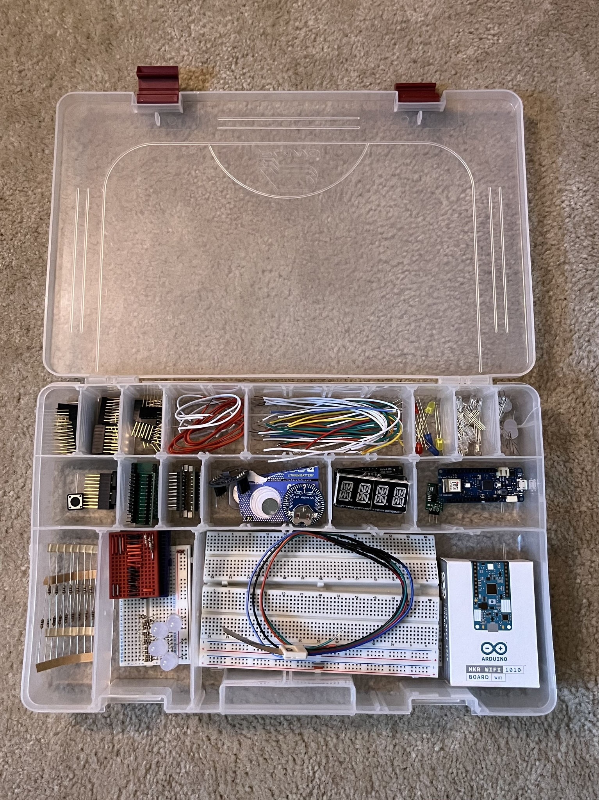 The backup box had multiples of all the modules in addition to solderless breadboards and assorted components.
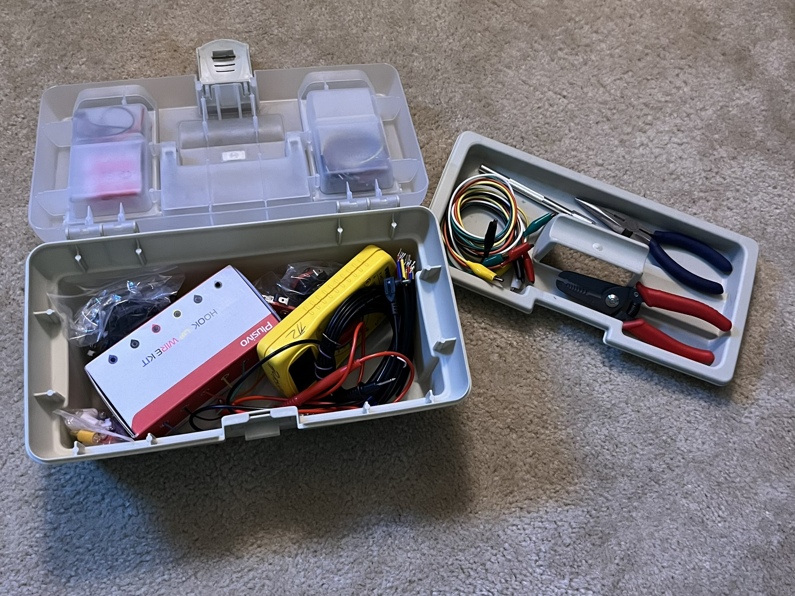 I also brought my little tool box with oodles of extra wire and tools Thankfully I had no use for any of my extra wiring.
Artery Check In
During check-in, The Artery (the Burning Man art department) showed us our placement on the map.
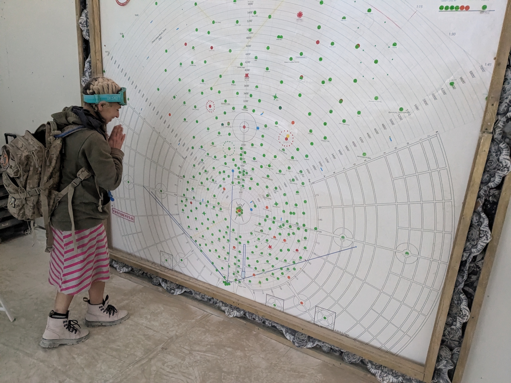 Part of the check in ritual is to have the artist place a label near the green sticker corresponding with their project on the art map. I was ecstatic to see my little green dot 🤩
 There we are!
There we are!
🌈
After identifying our placement on the map, the Field Ops volunteer took us to our actual location on Playa.
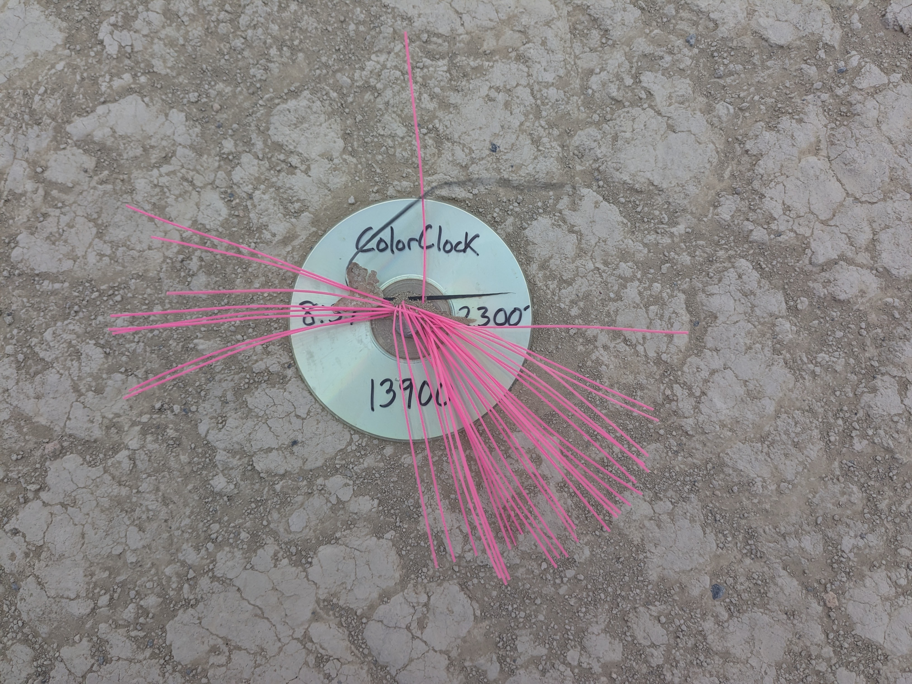 Each project’s physical location is marked with a “floofy” connected to a CD-R bolted into the ground.
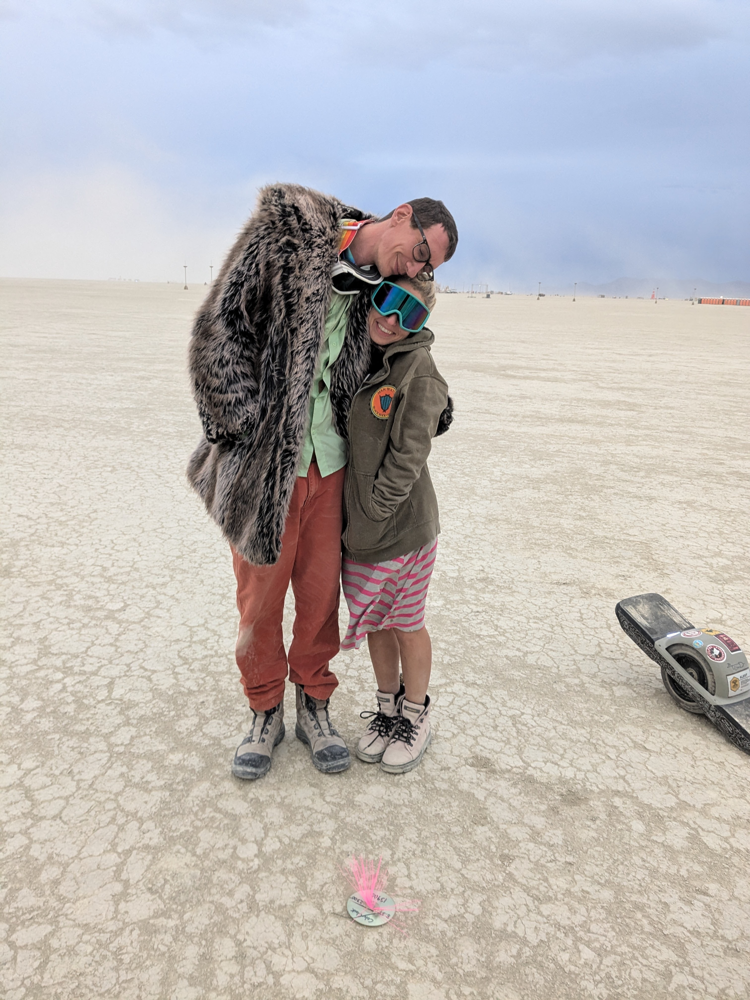 We were brought to our floofy!
Installation
The 2-day, 16 + 2 hour drive to Playa was a little nerve-racking. My poor Subie was at her towing capacity, and let us know with her engine whines. But we made it 😅
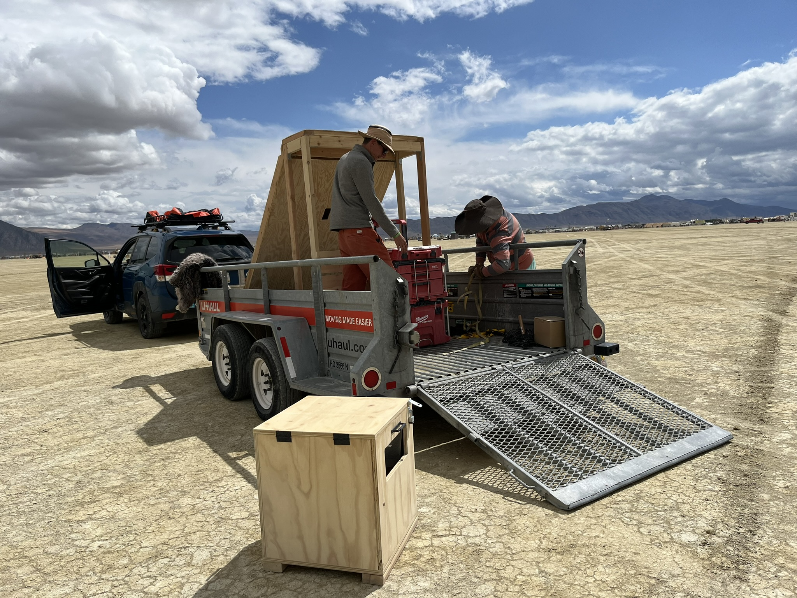 We were able to transport the project mostly assembled to make set up as easy as possible. Our good friend Cody was part of our art crew and helped with the construction.
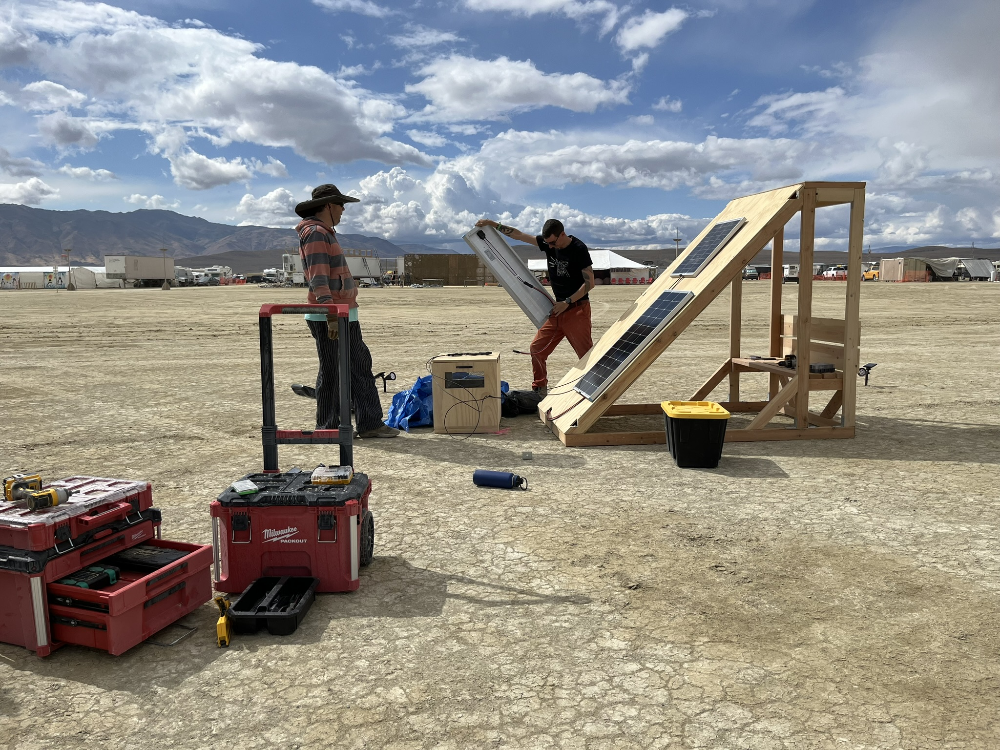 Bo is getting the solar panels set up. The wooden box in front of the solar panels housed the battery and solar charge controllers.
It had been raining the day before and we were frantically trying to finish assembly before the looming rain. I felt some droplets while I was connecting the light harnesses to the terminal block but we got everything buttoned up without any damage. Due to the threat of rain, we decided to wait until all chances of precipitation had passed before powering up.
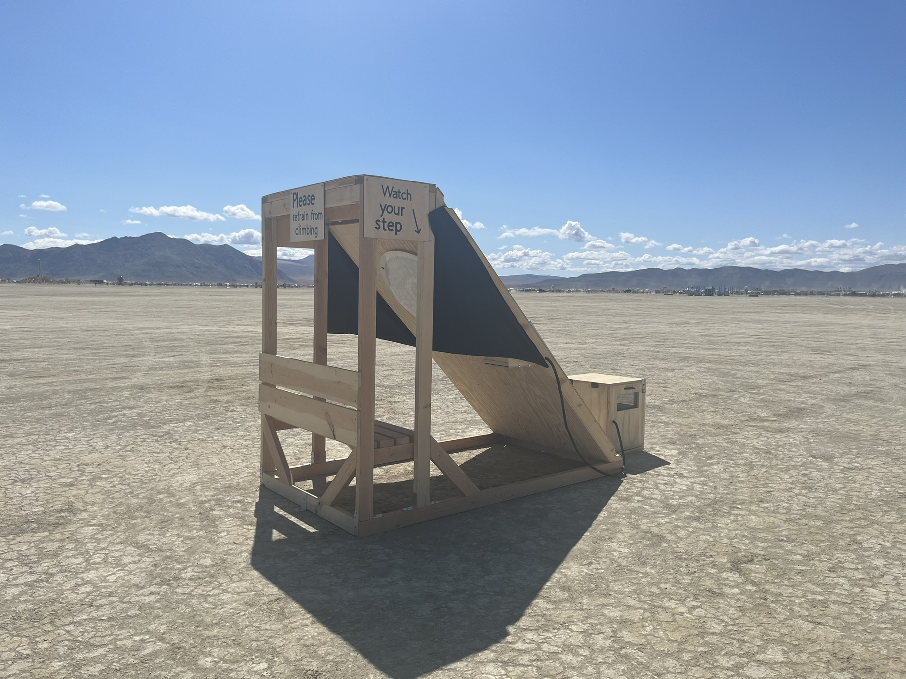 Many art installations at Burning Man are designed for climbing, but ColorClock was not, so we needed a sign to make that clear. Additionally I wanted to ensure participants were aware of the trip hazard posed by the cross beams at the bottom. My campmate Heather had the chance to experiment with a Cricut and created some super cute signs for us 😍.
I added curtains to the sides of the structure in a futile attempt at making the lights visible during the day, but the Playa sun always wins ☀️ So it turned out to be just a nighttime piece.Nighttime Viewing
While the colored LEDs were not visible during the day, the colors shined through beautifully at night.
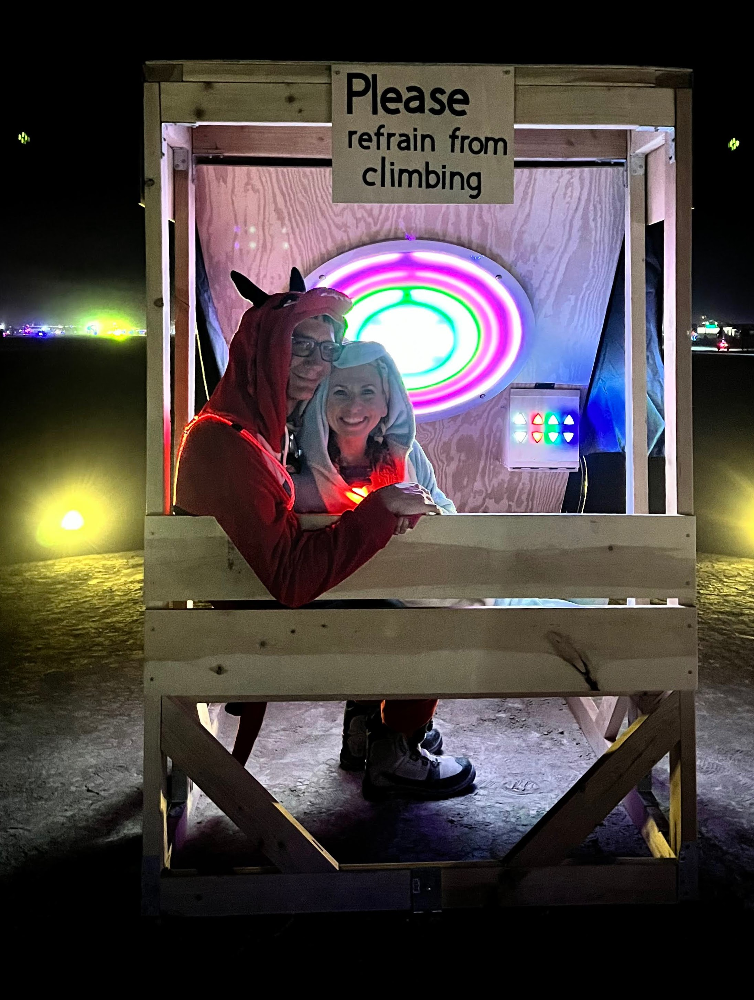 Bo and I were delighted to see how vibrant the colors glowed at night. Photo courtesy of my dear friend Victoria Hollis.
Here is a full 360 view of the project displayed on Playa.🌈
This recording is the tail-end of my presentation where I encouraged my campmates to explore the control panel, figuring out how the buttons influenced the central light. Video courtesy of Victoria Hollis.
I invited my camp to view the piece and gave a brief presentation explaining the meaning behind the colors of each LED strip in the light display.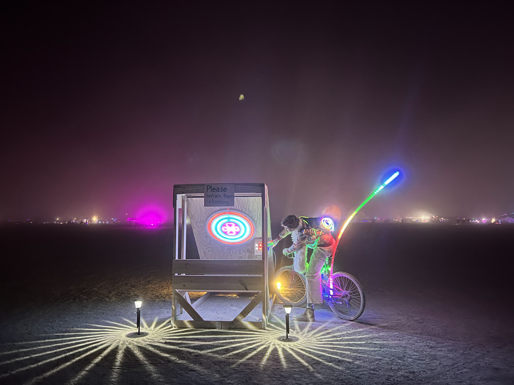 Over the course of the event, almost all of our solar lights to provide safe visibility were destroyed. My amazing camp member, Kerry Veenstra, who also had a piece on Playa, lent us some spare lights that added beautiful lighting to the ground. Photo courtesy of Victoria Hollis.
Participant Interaction
On a different note, event participants found my piece difficult to engage with. ColorClock was vandalized twice with mean stickers, and no one I spoke to at the project had the vaguest idea of what they were looking at or what the buttons actually did.
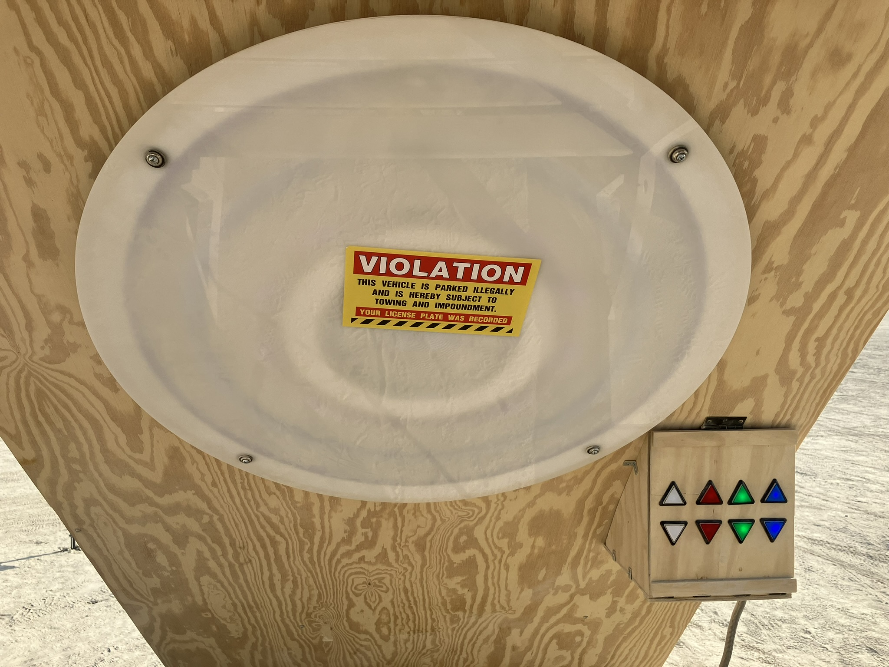
My camp mate Kerry found this sticker on my piece and promptly removed it. This was the second time someone had vandalized my art. I didn’t take it personally, but it saddens me that some people think it’s acceptable or amusing to deface a project that someone has invested so much time and effort into. Photo courtesy of Kerry Veenstra.
🌈
Regardless of how ColorClock was consumed by the public, I’m still damn proud of what we accomplished. And this project wasn’t for anyone one else - it was for me. The magic of ColorClock was in the software which I did not have the time or mental capacity to translate into the visual aesthetic.
The End of ColorClock Version 1
Many of the art pieces at Burning Man are burned, which I believe symbolizes the impermanence of life. Though our choice to burn our piece was mostly because we simply didn’t want to lug it home 😅 A ceremonial burn-in-place ritual is quite complex due to the need to protect the playa. Instead, we opted to disassemble the piece and burn it in the “Burn Garden.”
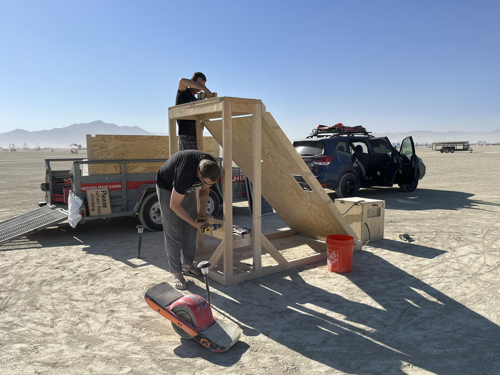
Before disposing of the structure, we salvaged the electrical components and removed all fasteners.
Cody and Bo disassembled the project and removed all screws. Our friend and campmate Asher (not pictured) was helpful in removing staples from the battery box and played a significant role in conducting a MOOP sweep of the area. In Burning Man culture, MOOP stands for Matter Out Of Place. A MOOP sweep involves meticulously combing the area for any debris to uphold the principle of “Leave No Trace.”
Only unpainted, untreated wood was permitted in the Burn Garden which is why we left the wood in the structure unfinished. Here, Bo is tossing our disassembled structure into the “Burn Garden”.
ColorClock Version 2?
I have a lot of ideas of how to modify ColorClock to be more palatable for the viewer and how to improve the design. So there will definitely be a version 2. Here is a short list of ideas for improvement:
- Use individually addressable LEDs.
- Design and create a printed circuit board.
- Modify lights in control panel to respond instantaneously to participant input.
- Come up with a better user interface.
- Make it smaller, reducing the need for a huge trailer.
- Make it cuter. Burners like cute things.
But there’s another project I’ve been contemplating for a few years so maybe that will be the next endeavor. I’m going to let this year’s experience settle for a bit before I decide on my next project…
Thank You 🙏
I would like to extend my heartfelt thanks to several individuals who made significant contributions to ColorClock:
Bo, my partner in project creation and life, played a crucial role in designing and singlehandedly constructing the physical structure. His support gave me the confidence to see the project through to completion even during challenging times. Bo assisted with troubleshooting both hardware and software issues, provided invaluable guidance on software design, including teaching me how to create a state machine, and helped me master Git rebase to keep the ColorClock repository organized.
Cody was incredibly helpful in numerous ways, from lifting heavy objects and loading to taking turns driving the large and unwieldy trailer. Beyond his practical support, Cody’s presence at Burning Man, his assistance with building and striking camp, and his joy and playfulness were heartwarming and made the experience even more special His support was deeply appreciated.
Kerry mentored me during the early stages of software design and inspired me to bring art to the Playa. Kerry also generously loaned and installed new solar lights for my piece when the originals were damaged and has been a steadfast advocate for both my well-being and my art.
Heather created charming signs that truly brought the piece together, adding a special touch to the overall presentation.
Austin assisted with 3D printing my test models for the electronics box providing a protective enclosure for the circuit board during its time on the Playa.
Asher assisted with our MOOP sweep and the disassembly process, ensuring that everything was handled efficiently and effectively.
Trevor, our Artery liaison, answered all our questions and provided exceptional support throughout the project.
To all my campmates with the Funguys, thank you for your warmth and unconditional support. You all are truly family to me 🥰
Finally, I’d like to extend my gratitude to the Burning Man organization for providing a platform to present ColorClock and for showcasing a diverse range of art and experiences. Their efforts create an environment where unique and extraordinary art forms can truly thrive.